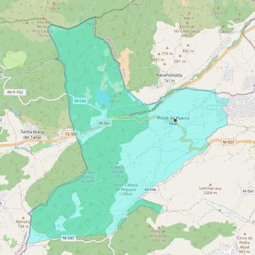

San Juan Bautista
- Arciprestazgo
- San Martín de Valdeiglesias
- Población
- Rozas de Puerto Real
- Dirección postal
- c/ Doctor Fleming, 1
- Código postal
- 28649
- Extensión
- 29,91 km² (2.991 ha)
- Teléfono
- 918 648 649
- Correo electrónico
- p.sjuanbautistarozas@gmail.com
- Información demográfica
- De la parroquia · De la población (Rozas de Puerto Real) · Del arciprestazgo (San Martín de Valdeiglesias)
- Dirección corta
- charlie-diaz-azarola.github.io/geoestadistica/p/080


Descargar mapaLímites según decreto
Los del término municipal
¿Algún dato de esta parroquia es incorrecto o ha cambiado? Comuníquenoslo.